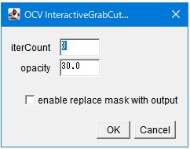
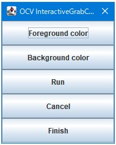

31st December 2025 at 10:45pm
OCV_InteractiveGrabCut（対話型GrabCut）
1. 概要：画像処理の仕組み
背景と前景（抽出したい物体）の境界を、ユーザーがヒントを与えながら精密に切り抜くツールです。 まず矩形（四角形）で囲った範囲を元にAIが自動で初期切り抜きを行い、その後、ユーザーがマウス操作で「ここは前景」「ここは背景」と修正を加えることで、複雑な形状も完璧に分離することができます。
「[[GrabCutを使った対話的前景領域抽出|http://labs.eecs.tottori-u.ac.jp/sd/Member/oyamada/OpenCV/html/py_tutorials/py_imgproc/py_grabcut/py_grabcut.html]]」や「[[grabcut sample|http://www.youtube.com/watch?v=kAwxLTDDAwU]]」を参考にしており、参考ページにある手順を実行できるようなプラグインになっています。
2. GUIの使い方
ステップ1：初期パラメータの設定

実行直後に表示されるダイアログで、処理の基盤となる設定を行います。
- iterCount: アルゴリズムを繰り返す回数です。回数が多いほど境界が精緻化されますが、計算時間は長くなります。
- opacity: 結果確認用のマスク画像に、元の画像を重ね合わせる際の不透明度（%）です。
- enable_replace_mask_with_output: 計算結果のマスクで現在のマスクを上書きし、次のステップの入力として使用するかを指定します。
ステップ2：対話的な修正（メイン操作）

「OK」を押すと矩形ROIに基づいた初期マスクが自動生成され、続いてボタンが並んだ専用の操作パネルが表示されます。以下のボタンとマウス操作を組み合わせて、納得がいくまで修正を繰り返します。
- Foreground color: このボタンを押した後、画像上の「抽出したい部分」をマウスでなぞります。ペン先の色は253に設定されます。
- Background color: このボタンを押した後、画像上の「削り取りたい部分」をマウスでなぞります。ペン先の色は60に設定されます。
- Run: マウスで描いたヒントを元に、再計算を実行して表示を更新します。
- Finish: 編集を終了し、最終的なマスク画像を確定させます。
- Cancel: 変更を破棄して終了します。
3. 注意点
- 事前の準備: 実行前に、必ずImageJの矩形（Rectangle）ツールを使用して、抽出したい対象を囲む四角いROIを作成しておく必要があります。
- 画像の形式: 元の画像は RGBカラー画像 である必要があります。
- 連動するウィンドウ: 編集用の操作パネルを閉じると、ループ処理が終了し、その時点のマスクが確定されます。